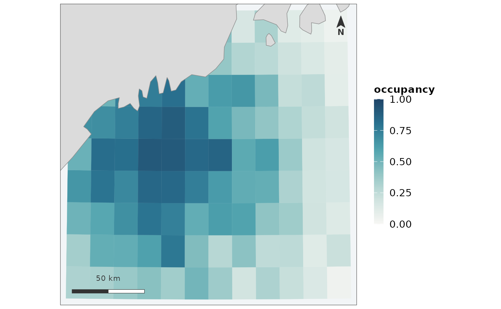

For a quantity that lives on [0, 1]: posterior occupancy, probability of presence, the proportion of ensemble members that agreed.
Usage
map_probability(
x,
value = NULL,
by = NULL,
coords = NULL,
crs = NULL,
label = NULL,
coastline = TRUE,
region = NULL,
limits = c(0, 1),
title = NULL,
subtitle = NULL,
caption = NULL,
scalebar = TRUE,
north = TRUE,
scalebar_position = "bl",
north_position = "tr",
inset = FALSE,
inset_position = "br",
inset_size = 0.3,
inset_zoom = 8,
graticule = FALSE,
base_size = 12,
theme = NULL,
expand = 0.02
)Arguments
- x
The geometry. An
sfobject of polygons, points or lines, a terraSpatRaster, or a data frame with coordinate columns. Seeas_map_data().- value
What to colour by: a column name, a vector in feature order, or a named vector joined by
by. Seeas_map_data().- by, coords, crs
Passed to
as_map_data().crsis also the CRS the map is drawn in – seedisplay_crs()for what happens when it is not given.- label
What to call the value in the legend. Defaults to the column name.
- coastline
Where land comes from.
TRUEchooses a source for the extent,FALSEdraws none, a path or ansfobject supplies one. Seecoastline().- region
An
sfpolygon to outline over the map – the study area, or whatever the grid was cropped to.- limits
The ends of the scale.
c(0, 1)by default, and changing it is usually a mistake – see below.- title, subtitle, caption
Figure text. The caption is where provenance belongs: which period, which product, which correction was not applied. Anything this function had to decide – a capped scale, a missing coastline – is appended to it.
- scalebar, north
Whether to draw the furniture. See
scale_bar()andnorth_arrow().- scalebar_position, north_position
Which corner each sits in:
"bl","br","tl"or"tr". Two pieces of furniture asked into the same corner are warned about rather than moved – which corner is free depends on where the data sits, and only the caller can see that.- inset
Whether to draw a locator inset – a small wider map with this figure's extent marked on it.
FALSEby default, unlike the scale bar and north arrow, because an inset sits over a corner of the data rather than in a margin.TRUEuses the same coastline source as the map; a path or ansfobject gives the inset its own.- inset_position, inset_size, inset_zoom
Which corner the inset sits in, how much of the panel width it takes, and how many times wider than the map it starts. See
locator_inset()–inset_zoomis a starting point, not a setting, because an inset showing nothing but water orients nobody.- graticule
Whether to label coordinates. Off by default; see
theme_fancymap().- base_size
Base font size in points.
- theme
A theme to use instead of
theme_fancymap().- expand
How much margin to leave around the data, as a fraction of its own extent. The default is a thin margin. Widen it when the data does not reach anything a reader can orient by – a small grid in open water shows no coastline at all until the panel is wide enough to include one.
Details
A probability is not a skewed positive quantity with a coincidental upper
bound, and drawing it with map_surface() gets two things wrong.
The scale is fixed at 0 and 1, not taken from the data. A map whose occupancy ran from 0.2 to 0.6 and was stretched across the full ramp says "high here, low there" in exactly the colours a map running 0 to 1 would use, and the two are not the same claim. Fixed ends also mean 0.6 is the same colour in every figure, which is what makes a series of years comparable at a glance.
The ramp is different. A sequential ramp puts its most saturated colour at the top of the data; here the top is certainty, and a cell at 0.02 should look nearly like a cell at 0, with weight arriving only as the value approaches 1.
Values outside [0, 1] are drawn at the ends and reported. A posterior mean cannot leave the interval, but a rescaled index or a ratio mistaken for a probability can, and that is worth being told about rather than clipping quietly.
See also
map_surface(), map_panels() for the same grid across seasons.
Examples
grid <- example_grid()
map_probability(grid, "occupancy", label = "occupancy")
